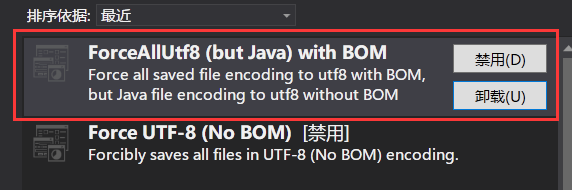
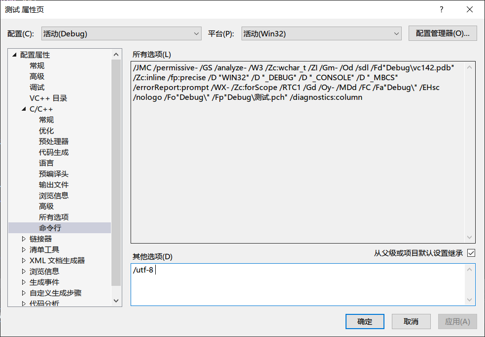
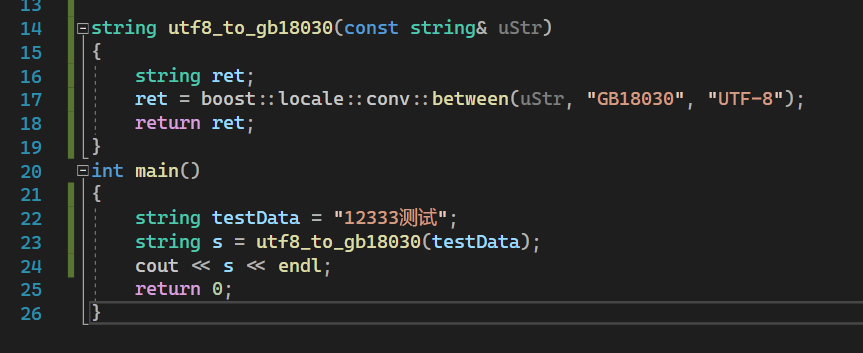
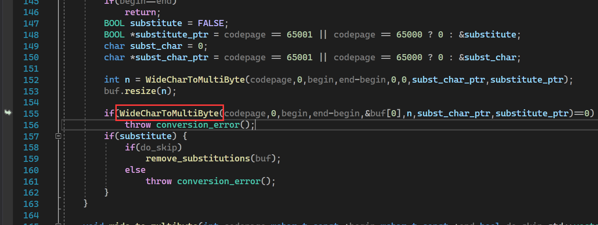

<!DOCTYPE html>
<html>
<head><meta name="generator" content="Hexo 3.9.0">
  <!-- hexo-inject:begin --><!-- hexo-inject:end --><meta charset="utf-8">
  <meta http-equiv="X-UA-Compatible" content="IE=edge">
  
  <title>将UTF8转换成GB18030的疲倦过程 | uint128&#39;s Blog</title>
  <meta name="description" content>
  <meta name="keywords" content>
  <meta name="HandheldFriendly" content="True">
  <meta name="apple-mobile-web-app-capable" content="yes">
  <link rel="shortcut icon" href="/">
  <link rel="alternate" href="/atom.xml" title="uint128's Blog">
  <meta name="viewport" content="width=device-width, initial-scale=1, maximum-scale=1">
  <meta name="description" content="将UTF8转换成GB18030的疲倦过程">
<meta name="keywords" content="C++">
<meta property="og:type" content="article">
<meta property="og:title" content="将UTF8转换成GB18030的疲倦过程">
<meta property="og:url" content="https://uint128.com/2020/01/04/使用libiconv将UTF8转换成GB18030/index.html">
<meta property="og:site_name" content="uint128&#39;s Blog">
<meta property="og:description" content="将UTF8转换成GB18030的疲倦过程">
<meta property="og:locale" content="zh-cn">
<meta property="og:image" content="https://uint128.com/2020/01/04/使用libiconv将UTF8转换成GB18030/img-1.png">
<meta property="og:image" content="https://uint128.com/2020/01/04/使用libiconv将UTF8转换成GB18030/img-2.png">
<meta property="og:image" content="https://uint128.com/2020/01/04/使用libiconv将UTF8转换成GB18030/img-3.png">
<meta property="og:image" content="https://uint128.com/2020/01/04/使用libiconv将UTF8转换成GB18030/img-4.png">
<meta property="og:image" content="https://uint128.com/2020/01/04/使用libiconv将UTF8转换成GB18030/img-5.png">
<meta property="og:updated_time" content="2020-01-06T04:28:22.708Z">
<meta name="twitter:card" content="summary">
<meta name="twitter:title" content="将UTF8转换成GB18030的疲倦过程">
<meta name="twitter:description" content="将UTF8转换成GB18030的疲倦过程">
<meta name="twitter:image" content="https://uint128.com/2020/01/04/使用libiconv将UTF8转换成GB18030/img-1.png">
    
  <link href="https://fonts.googleapis.com/css?family=Inconsolata|Titillium+Web" rel="stylesheet">
  <link href="https://fonts.googleapis.com/css?family=Roboto+Mono" rel="stylesheet">
  <link href="//cdnjs.cloudflare.com/ajax/libs/node-waves/0.7.5/waves.min.css" rel="stylesheet">
  <link rel="stylesheet" href="/style.css">
  <script>
    function setLoadingBarProgress(num) {
      document.getElementById('loading-bar').style.width=num+"%";
    }
  </script>
  <script src="/js/md5.js"></script>
<link rel="alternate" href="/atom.xml" title="uint128's Blog" type="application/atom+xml"><!-- hexo-inject:begin --><!-- hexo-inject:end -->
</head>
</html>
<body>
  <!-- hexo-inject:begin --><!-- hexo-inject:end --><div id="loading-bar-wrapper">
  <div id="loading-bar"></div>
</div>


  <script>setLoadingBarProgress(20)</script> 
  <header class="l_header">
	<div class='wrapper'>
		<div class="nav-main container container--flex">
			<a class="logo flat-box" href='/' >
				uint128's Blog
			</a>
			<div class='menu'>
				<ul class='h-list'>
					
						<li>
							<a class='flat-box nav-home' href='/'>
								Home
							</a>
						</li>
					
						<li>
							<a class='flat-box nav-archives' href='/archives'>
								Archives
							</a>
						</li>
					
						<li>
							<a class='flat-box nav-about' href='/about'>
								About
							</a>
						</li>
					
				</ul>
				<div class='underline'></div>
			</div>
			
				<div class="m_search">
					<form name="searchform" class="form u-search-form">
						<input type="text" class="input u-search-input" placeholder="Search" />
						<span class="icon icon-search"></span>
					</form>
				</div>
			
			<ul class='switcher h-list'>
				
					<li class='s-search'><a href='javascript:void(0)'><span class="icon icon-search flat-box"></span></a></li>
				
				<li class='s-menu'><a href='javascript:void(0)'><span class="icon icon-menu flat-box"></span></a></li>
			</ul>
		</div>
		
		<div class='nav-sub container container--flex'>
			<a class="logo" class="flat-box" href='javascript:void(0)'>
				Word of Forks
			</a>

			<ul class='switcher h-list'>
				<li class='s-comment'><a href='javascript:void(0)'><span class="icon icon-chat_bubble_outline flat-box"></span></a></li>
				<li class='s-top'><a href='javascript:void(0)'><span class="icon icon-arrow_upward flat-box"></span></a></li>
				<li class='s-toc'><a href='javascript:void(0)'><span class="icon icon-format_list_numbered flat-box"></span></a></li>
			</ul>
		</div>
	</div>
</header>
<aside class="menu-phone">
	<nav>
		
			<a href="/" class="nav-home nav">
				Home
			</a>
		
			<a href="/archives" class="nav-archives nav">
				Archives
			</a>
		
			<a href="/about" class="nav-about nav">
				About
			</a>
		
	</nav>
</aside>

    <script>setLoadingBarProgress(40);</script>
  <div class="l_body">
    <div class='container clearfix'>
      <div class='l_main'>
        <article id="post-使用libiconv将UTF8转换成GB18030"
  class="post white-box article-type-post"
  itemscope itemprop="blogPost">
	<section class='meta'>
	<h2 class="title">
  	<a href="/2020/01/04/使用libiconv将UTF8转换成GB18030/">
    	将UTF8转换成GB18030的疲倦过程
    </a>
  </h2>
	<time>
	  1月 4, 2020
	</time>
	
	</section>
	
		<section class="toc-wrapper"><ol class="toc"><li class="toc-item toc-level-2"><a class="toc-link" href="#MSVC使用UTF-8编码编译"><span class="toc-number">1.</span> <span class="toc-text">MSVC使用UTF-8编码编译</span></a></li><li class="toc-item toc-level-2"><a class="toc-link" href="#将UTF-8编码转换成GB18030编码"><span class="toc-number">2.</span> <span class="toc-text">将UTF-8编码转换成GB18030编码</span></a></li></ol></section>
	
	<section class="article typo">
  	<div class="article-entry" itemprop="articleBody">
    	<p>将UTF8转换成GB18030的疲倦过程</p>
<a id="more"></a>
<blockquote>
<p>编码问题是个很恶心人的问题。—— 鲁迅没说过这句话</p>
</blockquote>
<p>&emsp;&emsp;之前用C++开发过一个酷Q机器人插件（酷Q是一个基于Android QQ协议的QQ机器人软件，可以接收、发送各种类型的QQ消息），但是因为插件使用GBK编码的原因，插件无法发送emoji表情。<br>为了让这个插件能够发送emoji表情，必须修改插件程序使用的编码。</p>
<p>&emsp;&emsp;首先可以确定，酷Q的发送消息API用的肯定是GBK/GB2312之类的编码。因为插件在中文Windows+VS环境下开发，VS默认使用的编码就是GB2312（还是GBK？）。而我在调用这个API的时候，没有经过编码转换就能达到预期效果，也就是没有乱码。只有在发送文本里含有如Emoji、颜文字等特殊符号的时候，才会出现如 “????” 这种情况。</p>
<p>&emsp;&emsp;那么酷Q有没有什么发送消息的API是支持Unicode的呢？查阅资料后发现，酷Q的所有API使用的都是GB18030编码[1]。这种编码不仅对GBK/GB2312向下兼容，而且支持Unicode符号。酷Q使用这种编码是因为酷Q的插件大多用易语言开发，而易语言对Unicode的支持不好，如果使用GB18030编码就可以在保证一定的兼容性的同时支持Unicode符号。</p>
<p>&emsp;&emsp;我的插件发送的文本内容来自Web API，使用的是UTF8编码。在调用Web API获得文本内容后，需要把UTF8编码转换成GBK编码。都统一成GBK编码，标准输出、日志输出就不会出现乱码。我的想法是让整个程序都在UTF-8编码的环境下运行，也就是让标准输出、日志输出的文本的编码都是UTF-8。当然这样会有新的问题，中文Windows下CMD默认使用的是GBK编码，也就是说如果标准输出的文本是UTF-8编码，那么控制台黑框框看到的内容全都是乱码。不过我的插件没有用到标准输出，也就暂时不用担心这个问题。</p>
<h2 id="MSVC使用UTF-8编码编译"><a href="#MSVC使用UTF-8编码编译" class="headerlink" title="MSVC使用UTF-8编码编译"></a>MSVC使用UTF-8编码编译</h2><p>&emsp;&emsp;要做到程序在UTF-8环境下运行，其实只需要把源代码的文件改成UTF-8编码。然而VS保存文件的编码在中文windows下默认是GB2312。为了让保存的文件是UTF-8编码，可以使用一个叫做”forceAllUTF8”的VS扩展。</p>
<p></p>
<p>&emsp;&emsp;我用的是图中框起来的那个插件，第一个扩展和第二个扩展的区别是有无BOM，但是Without BOM好像无法正常编译，提示非法字符”0xXXXX”，不知道什么原因（即使添加了参数 <strong>/utf-8</strong> ）。</p>
<p>&emsp;&emsp;这还不够，MSVC对UTF-8的支持不够好，只做到这一步可能会无法编译，所以还需要在编译器的编译选项里加一个 <strong>/utf-8</strong> 参数。 </p>
<p></p>
<p>&emsp;&emsp;在VS里把所有的文件都打开再保存，重新编译、执行，插件运行日志文件的编码果然变成了UTF-8编码。</p>
<h2 id="将UTF-8编码转换成GB18030编码"><a href="#将UTF-8编码转换成GB18030编码" class="headerlink" title="将UTF-8编码转换成GB18030编码"></a>将UTF-8编码转换成GB18030编码</h2><p>&emsp;&emsp;我知道boost可以轻松做到编码转换。然而当我执行以下测试代码时……</p>
<p></p>
<p>&emsp;&emsp;得到的却是……</p>
<p></p>
<p>&emsp;&emsp;报错了！vector越界？</p>
<p>&emsp;&emsp;经过一系列的测试，发现只有在目标编码是GB18030的时候会出现这个错误。GBK to GB2312、UTF-8 to GBK 、 UTF-8 to GB2312都不会出错。</p>
<p>&emsp;&emsp;查了下资料（这里花了N个小时），发现这可能和boost::locale的实现方法有关。比如在Windows下使用MSVC编译boost，boost会使用Win32 API来实现boost::locale。翻了下报错点的调用栈，也确实发现了Win32 API。</p>
<p></p>
<p>&emsp;&emsp;继续查资料发现，编译boost::locale的时候可以指定使用ICU实现。而且vcpkg就可以做到个性化编译。那这就好办了！删掉原来的boost之后，直接执行:</p>
<figure class="highlight plain"><table><tr><td class="gutter"><pre><span class="line">1</span><br></pre></td><td class="code"><pre><span class="line">./vcpkg install boost-locale[icu]</span><br></pre></td></tr></table></figure>

<p>&emsp;&emsp;然而事情并没有那么简单。使用了这个所谓的指定使用 <strong>[icu]</strong> 实现的boost::locale有同样的问题、而且一样调用了Win32 API，和之前没有任何变化。</p>
<p>&emsp;&emsp;找不到原因，不知道是vcpkg的问题还是boost的问题。没办法，只能暂时放弃使用boost，然后寻找到了同样有编码转换功能的 <strong>libiconv</strong> 。</p>
<p>&emsp;&emsp;使用 libiconv 的过程异常顺利。贴一下测试用的代码：</p>
<figure class="highlight c++"><table><tr><td class="gutter"><pre><span class="line">1</span><br><span class="line">2</span><br><span class="line">3</span><br><span class="line">4</span><br><span class="line">5</span><br><span class="line">6</span><br><span class="line">7</span><br><span class="line">8</span><br><span class="line">9</span><br><span class="line">10</span><br><span class="line">11</span><br><span class="line">12</span><br><span class="line">13</span><br><span class="line">14</span><br><span class="line">15</span><br><span class="line">16</span><br><span class="line">17</span><br><span class="line">18</span><br><span class="line">19</span><br><span class="line">20</span><br><span class="line">21</span><br><span class="line">22</span><br><span class="line">23</span><br><span class="line">24</span><br><span class="line">25</span><br><span class="line">26</span><br><span class="line">27</span><br><span class="line">28</span><br><span class="line">29</span><br></pre></td><td class="code"><pre><span class="line"><span class="function"><span class="built_in">string</span> <span class="title">utf8_to_gb18030</span><span class="params">(<span class="keyword">const</span> <span class="built_in">string</span>&amp; uStr)</span></span></span><br><span class="line"><span class="function"></span>&#123;</span><br><span class="line">	<span class="keyword">iconv_t</span> conv = iconv_open(<span class="string">"GB18030"</span>, <span class="string">"UTF-8"</span>);</span><br><span class="line"></span><br><span class="line">	<span class="keyword">if</span> (conv == (<span class="keyword">iconv_t</span>)<span class="number">-1</span>) &#123;</span><br><span class="line">		iconv_close(conv);</span><br><span class="line">		<span class="keyword">throw</span> <span class="string">"An error occurred in iconv_open."</span>;</span><br><span class="line">		<span class="keyword">return</span> <span class="string">""</span>;</span><br><span class="line">	&#125;</span><br><span class="line"></span><br><span class="line">	<span class="built_in">string</span> ret;</span><br><span class="line">	ret.resize(uStr.size() * <span class="number">2</span>, <span class="string">'\0'</span>);		<span class="comment">// 不知道转码之后的字符串长度是多少，直接扩容两倍防止溢出</span></span><br><span class="line"></span><br><span class="line">	<span class="keyword">size_t</span> inbytes = uStr.size();</span><br><span class="line">	<span class="keyword">size_t</span> outbytes = ret.size();</span><br><span class="line">	<span class="keyword">char</span>* inPtr = <span class="keyword">const_cast</span>&lt;<span class="keyword">char</span>*&gt;(uStr.c_str());</span><br><span class="line">	<span class="keyword">char</span>* outPtr = <span class="keyword">const_cast</span>&lt;<span class="keyword">char</span>*&gt;(ret.c_str());</span><br><span class="line"></span><br><span class="line">	<span class="keyword">if</span> (iconv(conv, &amp;inPtr, &amp;inbytes, &amp;outPtr, &amp;outbytes) == (<span class="keyword">size_t</span>)<span class="number">-1</span>)</span><br><span class="line">	&#123;</span><br><span class="line">		iconv_close(conv);</span><br><span class="line">		<span class="keyword">throw</span> <span class="string">"An error occurred in iconv."</span>;</span><br><span class="line">		<span class="keyword">return</span> <span class="string">""</span>;</span><br><span class="line">	&#125;</span><br><span class="line"></span><br><span class="line">	iconv_close(conv);</span><br><span class="line"></span><br><span class="line">	<span class="keyword">return</span> ret;</span><br><span class="line">&#125;</span><br></pre></td></tr></table></figure>

<p>&emsp;&emsp;算是暂时解决的编码转换的问题。 libiconv 毕竟是个C语言库，传入的数组指针需要自己分配数组的空间。但是我并不知道转换之后的内容会占用多大的空间，为了防止越界直接设置为原大小的两倍，方法很暴力但是很有效。</p>
<blockquote>
<p>[1] 让编写的应用在使用酷Q API时支持Unicode文本, <a href="https://cqp.cc/t/38233" target="_blank" rel="noopener">https://cqp.cc/t/38233</a></p>
</blockquote>

  	</div>
	  
	  <div class="article-tags tags">
      
        <a href="/tags/C/">C++</a>
      
	  </div>
    
		
	
		<div class="art-item-footer">
				
					<span class="art-item-left"><i class="icon icon-chevron-thin-left"></i>prev：<a href="/2020/01/06/学校教务系统登录前端加密分析/" rel="prev"  title="学校教务系统登录前端加密分析">
						学校教务系统登录前端加密分析 
					</a></span>
				
				
					<span class="art-item-right">next：<a href="/2020/01/01/Hello-2020/" rel="next"  title="Hello 2020">
						Hello 2020
					</a><i class="icon icon-chevron-thin-right"></i></span>
				
		</div>
	
	</section>


	

</article>


	<div id="gitalk-container"></div>
	<link rel="stylesheet" href="https://unpkg.com/gitalk/dist/gitalk.css">

<script src="https://unpkg.com/gitalk/dist/gitalk.min.js"></script>

 <script type="text/javascript">
      var gitalk = new Gitalk({
        clientID: '53e3c578fcb7b7b1a4da',
        clientSecret: '74433ee77d6e13fd635b82add519e143ac791726',
        repo: 'cyanray.github.io',
        owner: 'cyanray',
        admin: ['cyanray'],
        id: CryptoJS.MD5(location.pathname).toString(),
        labels: ['Gitalk'],
        perPage: 15,
        pagerDirection: 'last',
        createIssueManually: true,
        distractionFreeMode: false
      })

      gitalk.render('gitalk-container')
 </script>


<script>
	window.subData = {
		title: '将UTF8转换成GB18030的疲倦过程',
		tools: true
	}
</script>

      </div>
      <aside class='l_side'>
        
  <section class='m_widget about'>
    
            <div class='header'>
                uint128.com
            </div>
            <div class='content'>
                <div class='desc'>uint128, unsigned int.<br>Uint128 Is Not a Type with 128 bits.</div>
            </div>
</section>

  <section class='m_widget links'>
<div class='header'>Links</div>
<div class='content'>
    <ul class="entry">
    
        <li><a class="flat-box" target="_blank" href="https://github.com/cyanray">
            <div class='name'>My Github</div>
        </a></li>
    
        <li><a class="flat-box" target="_blank" href="http://www.cqjtujx.club/">
            <div class='name'>重交计算机协会</div>
        </a></li>
    
        <li><a class="flat-box" target="_blank" href="http://www.h13studio.com/">
            <div class='name'>H13-Studio</div>
        </a></li>
    
        <li><a class="flat-box" target="_blank" href="http://quosimodo.cn/">
            <div class='name'>卡西莫多の礼物</div>
        </a></li>
    
    </ul>
</div>
</section>

      </aside>
      <script>setLoadingBarProgress(60);</script>
    </div>
  </div>
  <footer id="footer" class="clearfix">

	<div class="social-wrapper">
  	
      
        <a href="https://github.com/cyanray" class="social github"
          target="_blank" rel="external">
          <span class="icon icon-github"></span>
        </a>
      
    
  </div>
  
  <div>Theme <a href='https://github.com/stkevintan/hexo-theme-material-flow' class="codename">MaterialFlow</a> designed by <a href="http://keyin.me/" target="_blank">Kevin Tan</a>.</div>
  
</footer>


  <script>setLoadingBarProgress(80);</script>
  

<script src="//apps.bdimg.com/libs/jquery/2.1.4/jquery.min.js"></script>
<script src='//cdnjs.cloudflare.com/ajax/libs/node-waves/0.7.5/waves.min.js'></script>
<script src="//cdnjs.cloudflare.com/ajax/libs/scrollReveal.js/3.3.2/scrollreveal.min.js"></script>
<script src="/js/jquery.fitvids.js"></script>
<script>
	var GOOGLE_CUSTOM_SEARCH_API_KEY = "";
	var GOOGLE_CUSTOM_SEARCH_ENGINE_ID = "";
	var ALGOLIA_API_KEY = "";
	var ALGOLIA_APP_ID = "";
	var ALGOLIA_INDEX_NAME = "";
  var AZURE_SERVICE_NAME = "";
  var AZURE_INDEX_NAME = "";
  var AZURE_QUERY_KEY = "";
  var BAIDU_API_ID = "";
  var SEARCH_SERVICE = "hexo";
  var ROOT = "/"||"/";
  if(!ROOT.endsWith('/'))ROOT += '/';
</script>
<script src="/js/search.js"></script>
<script src="/js/app.js"></script>


  <script>setLoadingBarProgress(100);</script><!-- hexo-inject:begin --><!-- hexo-inject:end -->
</body>
</html>
